Lightning
flatworm
Pseudobiceros fulgor *
Family
Pseudocerotidae
updated
Feb 2020
Where
seen? This flatworm with a crackle of fine lines is often seen on our shores, on coral rubble and near reefs. 'Fulgor' means 'brilliant' or 'flashy' or 'lightning' and 'splendor' in Latin.
Features: 8-10cm long. Usually with deep ruffles. Body red, brown to black, with
fine white parallel lines from the centre
to the sides. Black wide margin with fine white lines parallel to the edge.The
underside is plain pink with wide plain black margin. It has a pair of pseudotentacles that are ear-like and pointed and made up of simple folded edges of the body.
Juveniles may have fewer lines. |
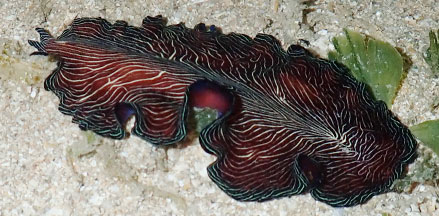
Chek Jawa, Jul 18
|
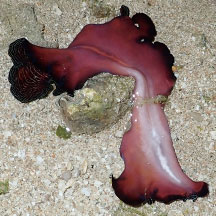
Underside plain pink. |
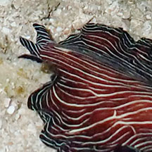
Erect pseudotentacles. |
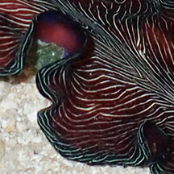
Black wide margin with fine lines. |
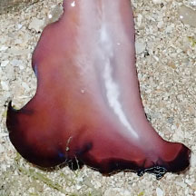
Underside with wide black margin. |
| Worm floating on water surface, then crawls when reaching a seagrass blade. Is this how it moves longer distances than it could by crawling slowly? |
| Lightning
flatworms on Singapore shores |
| Other sightings on Singapore shores |
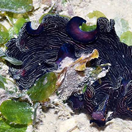
Changi, Dec 17
Photo shared by Loh Kok Sheng on facebook. |
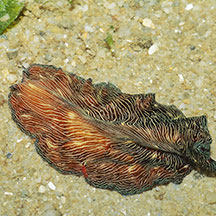
Changi, Dec 18
Photo shared by Abel Yeo on facebook. |
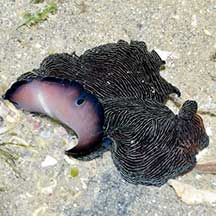
Changi Carpark 7, May 21
Photo shared by Loh Kok Sheng on facebook. |
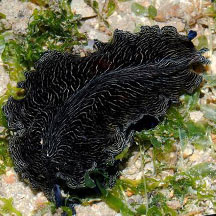
Pulau Sekudu, Aug 13
Photo shared by Loh Kok Sheng on flickr. |
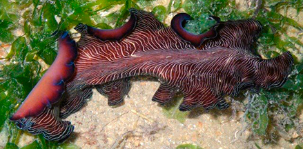
Pulau Sekudu, May 09
Photo shared by Loh Kok Sheng on his blog.
|
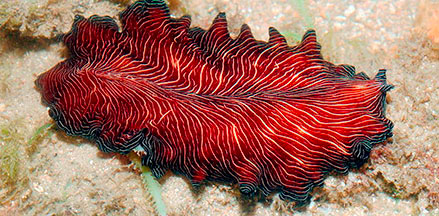
Chek Jawa, Jul 13
Photo shared by Loh Kok Sheng on flickr.
|
|
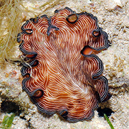
Seringat-Kias, Nov 14
Photo shared by Loh Kok Sheng on facebook.
|
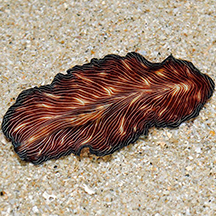
Seringat-Kias, Nov 14
Photo shared by Loh Kok Sheng on facebook.
|
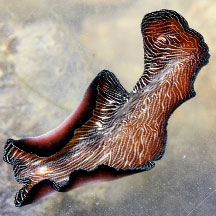
Lazarus Island, Jan 24
Photo shared by Loh Kok Sheng on facebook. |
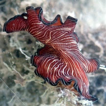
Sentosa Serapong, May 24
Photo shared by Loh Kok Sheng on facebook. |
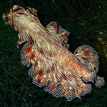
Big Sisters Island, Feb 24
Photo shared by Toh Chay Hoon on facebook. |
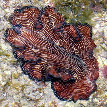
Big Sisters Island, Feb 26
Photo shared by Loh Kok Sheng on facebook. |
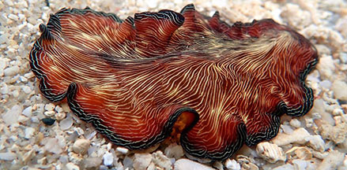
St John's Island, Jan 20
Photo shared by Jianlin Liu on facebook.
|
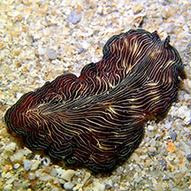
Big Sisters Island, Jan 20
Photo shared by Jianlin Liu on facebook. |
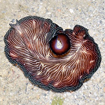
Pulau Hantu, May 19
Photo shared by Loh Kok Sheng on facebook. |
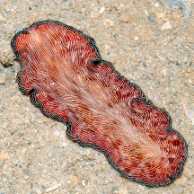
Pulau Semakau, Nov 12
Photo shared by Loh Kok Sheng on his blog. |
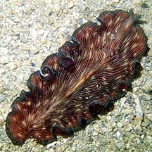
Pulau Semakau (East), Dec 20
Photo shared by Jianlin Liu on facebook. |
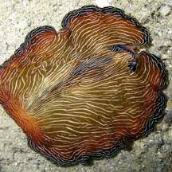
Pulau Semakau, Feb 08 |
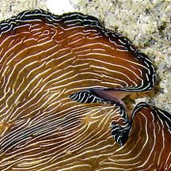
Photo shared by Toh Chay Hoon on her
flickr. |
|
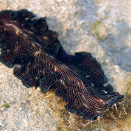
Terumbu Semakau, Aug 17
Photo shared by Jonathan Tan on facebook. |
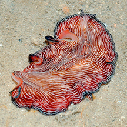
Terumbu Semakau, Nov 12
Photo shared by Loh Kok Sheng on flickr. |
|
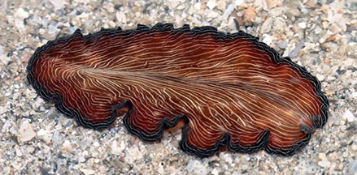
Terumbu Bemban, Jun 17
Photo shared by Abel Yeo on facebook.
|
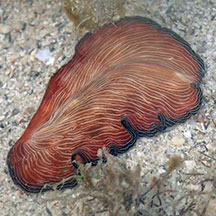
Terumbu Bemban, Jul 18
Photo shared by Liz Lim on facebook. |
|
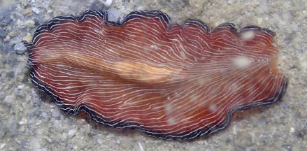
Beting Bemban Besar, Nov 18
Photo shared by Jesselyn Chua on facebook.
|
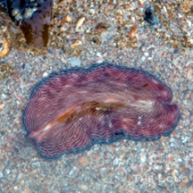
Terumbu Pempang Kecil, Jan 15
Photo shared by Jerome Lim on his blog. |
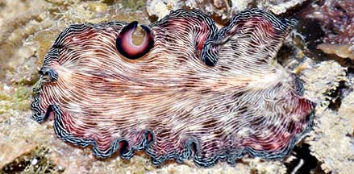
Pulau Berkas, Feb 22
Photo shared by Loh Kok Sheng on facebook. |
Acknowledgement
Grateful thanks to Rene Ong for sharing details and identifying the flatworms on this page.
References
- Rene S.L. Ong and Samantha J.W. Tong. 29 October 2018. A preliminary checklist and photographic catalogue of polyclad flatworms recorded from Singapore. Nature in Singapore 2018 11: 77–125.
- D. M. Bolaños, B. Q. Gan & R. S. L. Ong. 29 Jun 2016. First records of pseudocerotid flatworms (Platyhelminthes: Polycladida: Cotylea) from Singapore: A taxonomic report with remarks on colour variation.(pdf) The Raffles Bulletin of Zoology Supplement No. 34: 130-169 Pp. 130-169.
- Newman, L.J.
& Cannon, L.R.G. Nine new species of Pseudobiceros (Platyhelminthes:
Polycladida) from Indo-Pacific. Pp. 341-368. in the Raffles
Bulletin of Zoology vol 45.
- Gosliner,
Terrence M., David W. Behrens and Gary C. Williams. 1996. Coral
Reef Animals of the Indo-Pacific: Animal life from Africa to Hawaii exclusive of the vertebrates
 Sea Challengers. 314pp. Sea Challengers. 314pp.
- Newman, Leslie
and Lester Cannon. 2003. Marine
Flatworms: The World of Polyclads.
CSIRO Publishing. 97pp.
|
|
|